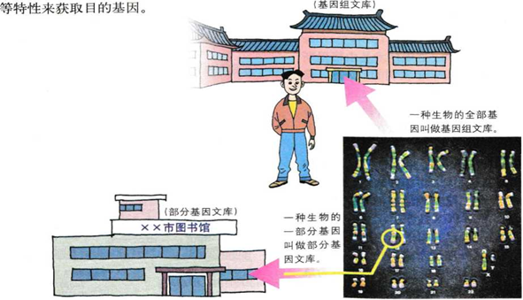

1.2 基因工程的基本操作程序
基因工程的基本操作程序主要包括四个步骤：目的基因的获取、基因表达载体的构建、将目的基因导入受体细胞、目的基因的检测与鉴定（图1-6)。
目的基因的获取
获取目的基因是实施基因工程的第一步。目的基因可以从自然界中已有的物种中分离出来，也可以用人工的方法合成。目的基因主要是指编码蛋白质的基因，例如，与生物抗逆性相关的基因、与优良品质相关的基因、与生物药物和保健品相关的基因、与毒物降解相关的基因，以及与工业所需用酶相关的基因等，也可以是一些具有调控作用的因子。
随着科学技术的发展，获取目的基因的方法也越来越多，目前常用的方法有以下几种。
从基因文库中获取目的基因
将含有某种生物不同基因的许多DNA片段，导入受体菌的群体中储存，各个受体菌分别含有这种生物的不同的基因，称为基因文库（gene library)。基因文库就像一座图书馆，每一个基因就是一本书。如果一座“图书馆”中包含了一种生物所有的基因，那么，我们就可以说这个基因文库很大，就像国家图书馆，这种基因文库叫做基因组文 库(genomic library)。也有一些基因文库比较小，就像某个市或某个单位的图书馆，只包含了一种生物的一部分基因，这种基因文库叫做部分基因文库，如cDNA文库（图1 - 7)。怎样从基因文库中得到我们所需的目的基因呢？这还是一件比较复杂的事情，简单地说就是根据目的基因的有关信息，例如，根据基因的核苷酸序列、基因的功能、基因在染色体上的位置、基因的转录产物mRNA，以及基因的表达产物蛋白质等特性来获取目的基因。
►寻根问底
为什么要构建基因文库？直接从含目的基因的生物体内提取不行吗？

生物技术资料卡
基因文库的构建
将某种生物体内的DNA全部提取出来，选用适当的限制酶，将DNA切成一定范围大小的 DNA片段，然后，将这些DNA片段分别与载体连接起来，导入受体菌的群体中储存，每个受体菌都含有了一段不同的DNA片段。也就是说，这个群体包含了这种生物的所有基因，叫做这种生物的基因组文库。如果用某种生物发育的某个时期的mRNA反转录产生的多种互补DNA (也叫cDNA)片段，与载体连接后储存在一个受体菌群中，那么，这个受体菌群体就叫做这种生物的cDNA文库。两种基因文库的主要区别如下表所示。
文库类型 |
cDNA文库 |
基因组文库 |
文库大小 |
小 |
大 |
基因中启动子（具有启动作用的DNA片段） |
无 |
有 |
基因中内含子（位于编码蛋白质序列内的非编码DNA片段） |
无 |
有 |
基因多少 |
某种生物的部分基因 |
某种生物的全部基因 |
物种间的基因交流 |
可以 |
部分基因可以 |
利用PCR技术扩增目的基因
PCR是多聚酶链式反应（polymerase chain reaction)的缩写。这项技术是由穆里斯 (K.Mullis)等人于1988年发明的，为此，穆里斯于1993年获得诺贝尔化学奖。PCR是一项在生物体外复制特定DNA片段的核酸合成技术。通过这一技术，可以在短时间内大量扩增目的基因。
PCR的原理和做法并不难，它是利用 DNA双链复制的原理，将基因的核苷酸序列不断地加以复制，使其数量呈指数方式增加 (图1 - 8)。利用PCR技术扩增目的基因的前提，是要有一段已知目的基因的核苷酸序列，以便根据这一序列合成引物。扩增的过程是：目的基因DNA受热变性后解链为单链，引物与单链相应互补序列结合，然后在DNA聚合酶作用下进行延伸，如此重复循环多次。由于延伸后得到的产物同样可以和引物结合，因而每一次循环后目的基因的量可以增加一倍，即成指数形式扩增（约为2n,其中n为扩增循环的次数)。上述过程可以在PCR扩增仪中自动完成（图1-9)。
此外，如果基因比较小，核苷酸序列又已知，也可以通过DNA合成仪用化学方法直接人工合成。
基因表达载体的构建
基因表达载体的构建是实施基因工程的第二步，也是基因工程的核心。其目的是使目的基因在受体细胞中稳定存在，并且可以遗传给下一代,同时,使目的基因能够表达和发挥作用。因此，一个基因表达载体的组成，除了目的基因外，还必须有启动子(promoter)、终止子(terminater) 以及标记基因（图1-10)等。启动子是一段有特殊结构的DNA片段，位于基因的首端，它是RNA聚合酶识别和结合的部位，有了它才能驱动基因转录出mRNA，最终获得所需要的蛋白质。终止子相当于一盏红色信号灯，使转录在所需要的地方停止下来。终止子位于基因的尾端，也是一段有特殊结构的DNA短片段。标记基因的作用是为了鉴别受体细胞中是否含有目的基因，从而将含有目的基因的细胞筛选出来，如抗生素抗性基因就可以作为这种基因。
寻根问底：将生物的所有DNA直接导入受体细胞不是更简单吗？如果这么做，结果会怎样？
另外，由于受体细胞有植物、动物、微生物之分，以及目的基因导入受体细胞的方法不同，因此，基因表达载体的构建上也会有所差别，不可能是千篇一律的。
将目的基因导入受体细胞
将目的基因导入受体细胞是实施基因工程的第三步。目的基因进入受体细胞内，并且在受体细胞内维持稳定和表达的过程，称为转化（transformation）。用什么方法将目的基因导入受体细胞呢？目前已开发出来的方法有很多种，每种方法都有其利弊，适合于不同的受体细胞。究竟选用哪种方法，要根据具体情况而定。下列介绍几种常用的转化方法。